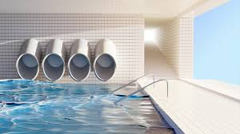

🏊 Nível 23 — Piscinas
Descrição: Simplesmente. Piscinas. ApEnAs. T0b04gu@$. Em. Uma. P!s¢!n4.
Sensação: Desorientação líquida. A água parece te entender.
Saídas:
Itens Coletáveis: Toalhas dobradas, óculos de natação, chaves de armários enferrujadas.
Entidades: Nenhuma.